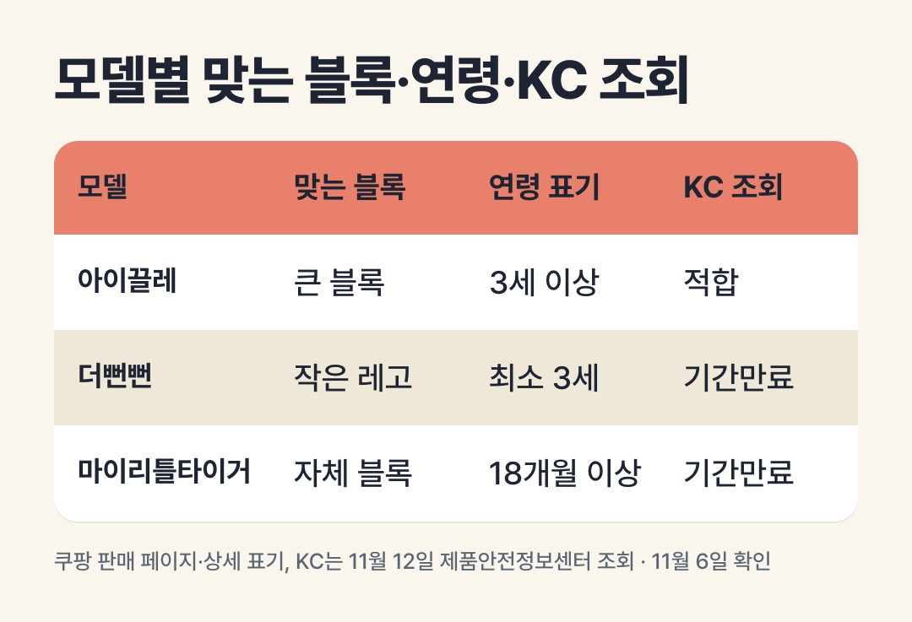
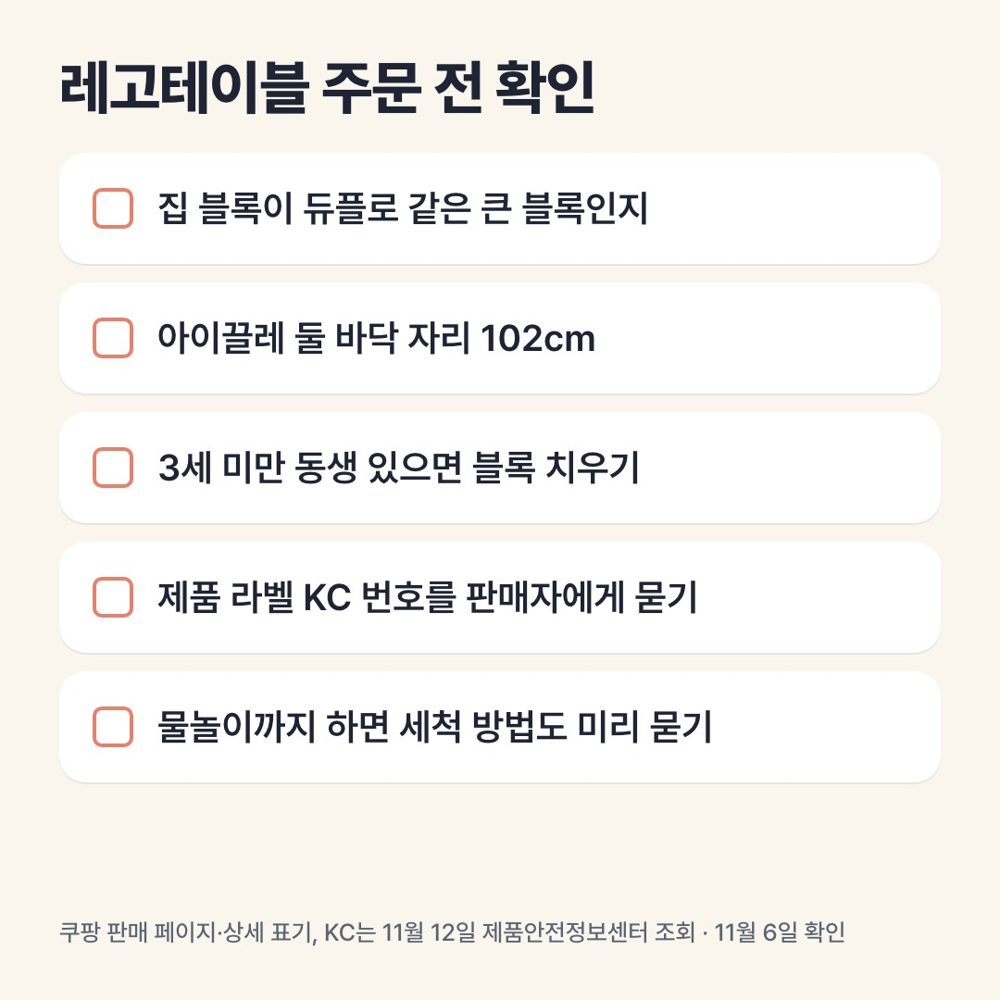

이 게시물은 쿠팡 파트너스 활동의 일환으로, 이에 따른 일정액의 수수료를 제공받습니다.
레고테이블 듀플로 호환, 폭 102cm 아이끌레
밤에 지나가다 맨발로 블록을 밟는 집이라면, 블록에 '자리'를 만들어 줄 때예요. 먼저 집에 굴러다니는 블록이 큰 블록인지 작은 레고인지부터 보면 돼요.
듀플로·통큰블록 같은 큰 블록으로 놀고 의자까지 원하는 집이면 아이끌레 와이드 테이블+의자 세트예요. 작은 레고(클래식)에 맞는 더뻔뻔 접이식 블럭책상, 18개월 무렵 첫 블록용 마이리틀타이거 블록 테이블도 있지만, 두 제품은 판매 페이지에 적힌 KC 번호가 제품안전정보센터 조회에서 '기간만료'로 나와 이 글에서는 링크하지 않았어요.


듀플로 호환 레고테이블은 어느 걸 고르나요?
판마다 맞는 블록 규격이 달라요. 세 제품을 블록 크기로 나눠 보면 이래요.
큰 블록이면 아이끌레예요. 듀플로·옥스포드·통큰블록과 호환된다고 나와요. 테이블만 약 102×45cm, 높이 45~50cm 조절이고 의자 2개와 블록 719개가 같이 와요. 11월 6일 쿠팡 쿠폰 적용가는 64,990원(상품평 94개)이었고, 판매 페이지 표기 연령은 3세 이상이에요.
작은 레고(클래식)면 더뻔뻔 좌식형 접이식 블럭책상이 맞아요. 레고 시티·프렌즈·닌자고 같은 작은 레고와 옥스포드 작은 블록용이고, 상세에 '듀플로·뉴플로·통큰블럭·베베블럭 같은 큰 블록은 호환되지 않는다'고 적혀 있어요. 같은 날 연베이지 기준 25,580원(와우할인, 상품평 556개)이었어요.
18개월 무렵 첫 블록이면 마이리틀타이거 블록 테이블이 있어요. 500×340×210mm 작은 테이블에 블록 160개가 들어 있고, 만 18개월 이상으로 적혀 있어요. 같은 날 49,080원(와우쿠폰 적용, 상품평 792개)이었고, 다른 회사 블록 호환 표기는 찾지 못했어요.
셋 중 링크한 건 KC 조회가 '적합'으로 나온 아이끌레뿐이에요. 나머지 둘은 아래 조회 결과를 보고 판매자에게 먼저 물어보세요.
듀플로 같은 큰 블록으로 놀고 1m 남짓한 놀이 자리를 내줄 수 있는 집이라면 아이끌레예요.
아이끌레 와이드 테이블+의자 세트(LC-0061) 64,990원(11월 6일 쿠팡 확인) — 가격·구매처 보기
KC 번호를 조회하면 어떻게 나오나요?
세 제품 판매 페이지에 KC 어린이제품 안전확인 번호가 적혀 있어서, 11월 12일 밤 제품안전정보센터 인증정보에서 하나씩 조회했어요.
아이끌레 CB064R5273-4002는 인증상태 '적합'이에요(인증일 2024년 8월 1일, 모델명 LC-0061).
더뻔뻔 CB063R581-6003은 '기간만료'로 나왔어요(인증일 2016년 9월 6일, 모델명 블럭놀이판).
마이리틀타이거 CB064R2117-9002도 '기간만료'였어요(인증일 2019년 7월 30일, 모델명 타이거 블록). 같은 모델명으로 끝에 r이 붙은 CB064R2117-9002r은 '적합'(2024년 6월 27일)으로 따로 있는데, 판매 페이지엔 9002만 적혀 있어요.
'기간만료'가 지금 파는 제품에 어떤 뜻인지는 확인하지 못했어요. 두 제품을 고르려면 주문 전에 판매자에게 제품 라벨의 KC 번호와 제조 시기를 묻고, 그 번호를 제품안전정보센터에서 직접 조회해 보세요.
몇 살부터 쓸 수 있다고 적혀 있나요?
가장 낮은 건 마이리틀타이거의 만 18개월 이상이에요. 아이끌레는 '3세 이상'과 '영유아~8세'가 같이 적혀 있고, 더뻔뻔은 쿠팡 표기가 최소 3세인데 상세엔 '보통 6세 이상이 쓰는 일반 레고 시리즈'와 호환된다고 해요. 판 표기와 함께 꽂을 블록의 표시 연령도 봐야 해요.
표시 연령보다 어린 아이가 쓰거나 집에 3세 미만 동생이 있다면, 작은 블록은 입에 들어갈 수 있어요. 놀이 중엔 보호자가 곁에서 지켜보고, 다 놀면 블록을 치워 두세요. 마이리틀타이거 상세의 주의 문구에도 '입에 넣거나 빨지 말 것'이 있어요.

거실 바닥에 1m를 내줄 수 있나요?
1m 넘는 테이블을 둘 자리가 없다면 아이끌레는 맞지 않아요. 의자 두 개는 약 23×23×39cm이고, 높이는 5cm 연장키트로 조절해요. 블록 넣는 칸 깊이는 약 8cm예요.
상세엔 '약 77×45cm 와이드 대지'라는 숫자도 있어요. 블록판과 전체 크기가 다른 것으로 보이니, 자리는 큰 쪽 102cm 기준으로 잡으세요.
마이리틀타이거는 무게 2.7kg인 바닥용 작은 테이블이고, 더뻔뻔은 다리를 접어 세워 보관하는 좌식형이에요. 더뻔뻔 상세 도면의 35.5·44.6·54.2·22.3cm가 어느 변인지는 읽지 못했어요.
모래·물놀이까지 하면 씻는 법은요?
아이끌레는 물놀이·모래놀이 겸용이라, 물 빠짐 구멍을 뚫고 보호캡으로 막아 쓰라는 안내가 있어요. 구멍은 어른이 뚫고, 물·모래놀이 중에도 보호자가 곁에 있어 주세요.
세척 방법은 아이끌레 상세에서 찾지 못했어요. 모래놀이까지 할 생각이면 씻는 법을 판매자에게 미리 물어 두세요. 상세에서 씻는 법을 찾은 건 마이리틀타이거뿐이었어요(40도 이하 물에 중성세제).

가격·상품평 수는 11월 6일 22시 쿠팡 화면에서 확인한 값이라 그 뒤로 바뀌었을 수 있어요. 더뻔뻔은 그 시각에도 옵션마다 24,230~32,800원으로 달랐어요. 호환 블록·연령·크기·인증 번호는 판매 페이지와 상세 이미지에 적힌 글자를 옮긴 것이고, KC 상태는 11월 12일 제품안전정보센터 조회 결과예요. 직접 써 본 후기는 아니에요.
바닥에 굴러다니는 블록 하나를 주워 큰 블록인지 보세요. 큰 블록이고 줄자를 102cm까지 빼도 자리가 남는다면 아이끌레를 보면 돼요.
#레고테이블 #블록테이블 #레고책상 #듀플로테이블 #유아놀이테이블